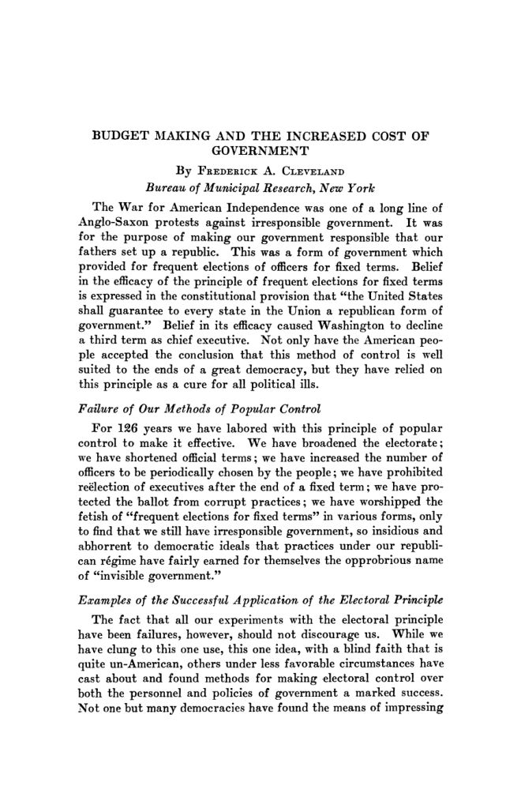

Cleveland, 1915: o orçamento como instrumento do governo visível
Leitura: 8 min
Frederick A. Cleveland acompanha uma sessão da Assembleia de Ontário para mostrar como o orçamento obriga o Executivo a prestar contas em público, e a compara com a prática americana de dotações.


Em 3 de março de 1914, o tesoureiro da província de Ontário, I. B. Lucas, levantou-se na Assembleia Legislativa, em Toronto, para fazer o discurso do orçamento. Antes de explicar as contas, gastou boa parte do tempo com os críticos financeiros da oposição, que tinham previsto déficit e encontravam um superávit. Frederick A. Cleveland, do Bureau of Municipal Research de Nova York, viu nisso não um excesso retórico, mas o funcionamento de um método.
Seu texto, lido na primeira sessão da reunião de Washington, parte de um diagnóstico sobre os Estados Unidos. Durante 126 anos, diz, o país trabalhou para tornar eficaz o princípio de eleições frequentes para mandatos fixos: ampliou o eleitorado, encurtou mandatos, multiplicou os cargos eletivos, proibiu reeleições, protegeu o voto. E continuou com um governo irresponsável, que mereceu o nome de governo invisível.
O que se vê numa sessão em Ontário?
Cleveland escolhe Ontário por ser a mais populosa e rica das províncias canadenses, com condições sociais e econômicas parecidas com as de Ohio, Pensilvânia, Nova York ou Nova Inglaterra. A Assembleia reuniu-se em 18 de fevereiro de 1914. Em 26 de fevereiro, por moção de Lucas, apoiada por Hearst, resolveu reunir-se no dia seguinte em comissão de suprimento e em comissão de meios. A moção, explica Cleveland, é o aviso do Executivo de que está pronto para relatar o que foi feito e gasto, propor o que pretende fazer e mostrar como pagar.
A partir daí, antes da ordem do dia, os deputados fazem perguntas aos chefes de departamento, respondidas no plenário, ou obtêm ordens para que os funcionários tragam as respostas depois. O princípio, segundo Cleveland, tem dois lados: todo representante deve poder obter a informação que quiser, e nenhum funcionário pode ser atacado sem estar presente para se defender.
Para que serve o discurso do orçamento?
Para explicar o que foi feito e o que se propõe e, ao mesmo tempo, provocar a oposição a revelar suas posições. As contas públicas, com o relatório do auditor, foram apresentadas à Casa, e Lucas pôs na mesa de cada deputado as estimativas; o discurso foi, nas palavras de Cleveland, o tiro de abertura do partido no poder para localizar as baterias adversárias. Uma semana depois, o líder da oposição apresentou emenda que reprovava a apresentação das contas e os gastos que chamava de extravagantes. Aprovada, ela significaria que a maioria perdera a confiança no governo, que teria de renunciar ou convocar eleições. Hearst respondeu com uma contraemenda sobre a ausência do sistema de despojos no serviço público, e ela passou.
Seguiram-se as estimativas, item por item, em comissão de toda a Casa, com a imprensa e o público presentes. Cada ministro devia estar ali para defender seus números, e, quaisquer que tivessem sido as divergências internas, o gabinete votava como um só homem; quem não aceitasse essa solidariedade devia renunciar antes. Os debates seguiram até 24 de abril, quando a Casa aprovou as resoluções de suprimento e de meios e, logo depois, a lei de dotações.
“Isto é publicidade. Isto é governo visível.” (“This is publicity. This is visible government.”)
E como é nos Estados Unidos?
Cleveland contrasta esse rito com os métodos do governo federal e dos estados: dotações discutidas em comissões fechadas, apresentadas no fim da sessão com volumes de audiências que ninguém tem tempo de ler, aprovadas sob regra de mordaça, entre trocas de favores e verbas paroquiais. Ali, a discussão em comissão raramente vira notícia, porque ninguém assume a responsabilidade por uma proposta definida. Em Ontário, onde o chefe do governo se expõe em público e desafia todos, qualquer embate vira notícia. As constituições americanas, acrescenta, são documentos de limitação de poderes, construídos sobre a desconfiança.
A exposição, diz, não traz instabilidade. A administração de Ontário estava no cargo havia onze anos, e a anterior permanecera mais de trinta. Nos estados americanos, ao contrário, o eleitor se habituara a derrubar a administração a cada eleição como forma de protesto contra o governo invisível.
Quanto custa um governo sem orçamento?
O aumento da despesa acompanha o aumento dos serviços públicos e ocorre com ou sem orçamento, reconhece Cleveland; o desperdício, não. A comissão de economia do presidente Taft estimou que a perda média nos escritórios de Washington estudados em detalhe girava em torno de 30%, pouco dela atribuível à ineficiência individual. No gabinete do ajudante-geral do Departamento da Guerra, a correspondência média passava por 79 operações, e quase sessenta funcionários se ocupavam só de resumir as cartas recebidas.
Fora de Washington, a perda seria maior: poucas pessoas bem informadas, diz Cleveland, duvidariam de que ao menos metade das centenas de milhões destinados a rios e portos fora desperdiçada. O Bureau of Municipal Research encontrara, em pequenos governos locais, perdas que em alguns casos chegavam perto de cem por cento. A conclusão é distributiva: cada dólar desperdiçado priva de um serviço quem menos pode pagar por ele.
“o desperdício no governo é um imposto sobre os pobres” (“waste in government is a levy on the poor”)
O que seria um sistema orçamentário eficaz?
Cleveland lista quatro elementos. Primeiro, um Executivo responsável por elaborar, apresentar e explicar um plano de serviços e finanças, sem poder executá-lo antes da aprovação. Segundo, um corpo de representantes que examine o que foi feito com os recursos já concedidos e só aprove o plano quando ele reunir maioria. Terceiro, um procedimento que obrigue o Executivo a apresentar contas, estimativas e propostas à Casa reunida em comissão geral, no início da sessão. Quarto, um meio de levar ao eleitorado os impasses entre o Executivo e a maioria.
Em tese, quase tudo poderia ser feito sem emenda constitucional. Na prática, diz Cleveland, um orçamento preparado pelo Executivo, como os do presidente Taft e do governador Whitman, iria para uma comissão permanente e se perderia, ou voltaria tão remendado que não seria reconhecido. Só uma emenda que obrigasse o Executivo a apresentar o orçamento e a Casa a recebê-lo em comissão geral, dando a ambos o direito de convocar nova eleição, estabeleceria essas relações. E ela só viria depois de uma campanha de educação do público.
Que objeções ele ouviu?
John A. Fairlie, da University of Illinois, respondeu que em Ontário o orçamento é preparado por ministros que são também líderes da maioria no Legislativo, e não por um Executivo independente; a proposta se pareceria mais com o sistema alemão. Lembrou que a dissolução por causa do orçamento era rara até na Grã-Bretanha e preferiu uma comissão financeira conjunta das duas Casas, trabalhando com o Executivo. S. Gale Lowrie, da University of Cincinnati, apontou a divisão das dotações entre nove comissões da Câmara. Cleveland replicou que os ministros de Ontário são executivos em todos os sentidos e que juntar funções críticas e executivas enfraquece as duas.
Na minha leitura
Na minha leitura, o argumento de Cleveland é sobre informação e responsabilização. O orçamento aparece menos como peça contábil do que como mecanismo para tornar observável a decisão de gasto: quem propõe, quem critica, quem vota e quem responde por cada item. A comparação entre Ontário e Washington isola essa variável, a visibilidade, e liga a ela o desperdício que a comissão de economia procurou medir.
O debate com Fairlie mostra o limite do transplante institucional. O que em Ontário funciona porque o gabinete é a cúpula da maioria parlamentar não se reproduz por estatuto num regime de separação de poderes. A divergência entre os dois é sobre onde pôr a iniciativa orçamentária sem desfazer o equilíbrio entre Executivo e Legislativo, uma questão de desenho que qualquer reforma fiscal enfrenta.
Glossário
- Comissão de suprimento
- a Casa reunida em comissão para examinar e votar as despesas propostas pelo governo.
- Comissão de meios
- a Casa reunida em comissão para examinar receitas e empréstimos que financiarão as despesas aprovadas.
- Comissão geral
- sessão em que todo o plenário funciona como comissão, com debate mais livre e perguntas diretas aos ministros.
- Orçamento executivo
- plano de despesas e receitas preparado e apresentado pelo chefe do Executivo ao Legislativo.
- Sistema de despojos
- prática de distribuir cargos públicos a partidários do governo vencedor.
- Verbas paroquiais (pork barrel)
- dotações destinadas a obras locais para atender interesses eleitorais de parlamentares.
- Troca de favores (log-rolling)
- acordo entre parlamentares para votar nos projetos uns dos outros.
Fontes
- Budget Making and the Increased Cost of Government — Frederick A. Cleveland, Bureau of Municipal Research, Nova York (pp. 50–70). JSTOR · Internet Archive (PDF)
- Edição completa, com os demais artigos: Nº 140 do Arquivo.
Documento em domínio público (EUA, publicado antes de 1931), via JSTOR Early Journal Content e Internet Archive. Resumo e comentário do autor deste site, sem afiliação com a American Economic Association. Encontrou um erro? Escreva: a correção é publicada no próprio texto, com data.
← Clark, 1915: a guerra como descapitalização e o cálculo da paz ↑ Nº 140 · Washington, 1915: o custo da guerra, o orçamento e o paradoxo do Alabama